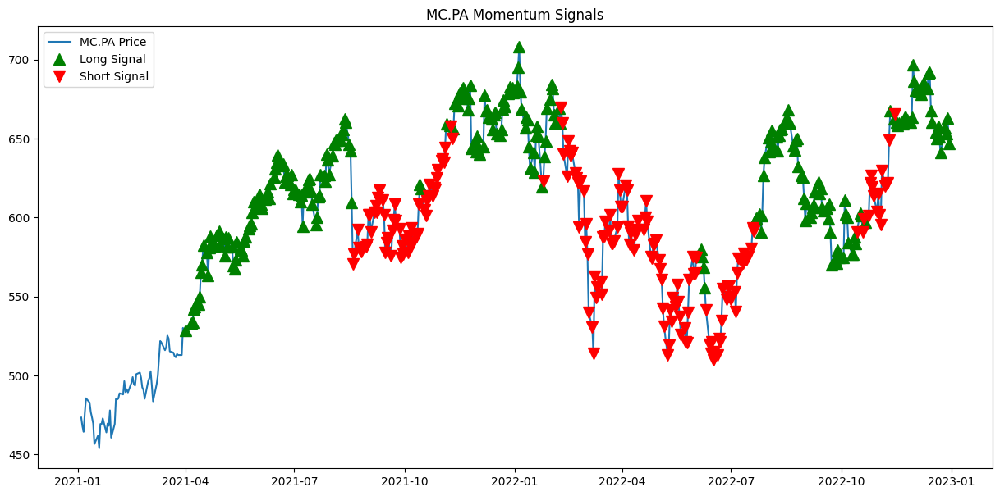

常见策略Alpha/Strategy/Schemes#
技术分析交易Technical Analysis
PER(Price-to-Earning Ratio)市盈率
DDM(Dividend Discount Model)股息折扣模型 - 利用企业指标进行行业分析 Analysis of sector using corporate indicateurs
价格预测
随机森林
K-Nearest Neighbors (KNN)
DBSCAN (Density-Based Spatial Clustering of Applications with Noise)基于密度的聚类方法
Value at Risk (VaR)风险价值 - “What is the worst loss I can expect with X% confidence?”
Expected Shortfall(ES)预期损失or缺口 - “If I do experience a loss beyond that, what’s the average loss I can expect?”
Stress test压力测试模拟
Momentum#

import pandas as pd
import yfinance as yf
import matplotlib.pyplot as plt
# Function to calculate momentum return during h look_back periode
def calculate_momentum(prices, lookback_period):
momentum = prices.pct_change(lookback_period)
return momentum
# Constants
LOOKBACK_PERIOD = 63 # Approximately 3 months of trading days for 2 years of période
REBALANCE_FREQ = '1D' # Daily rebalancing
# Use calculate_momentum -> long/short signals -> plotting
def momentum_strategy(ticker, start_date, end_date):
# Download data and select the 'Close' column, which is already a DataFrame
data = yf.download(ticker, start=start_date, end=end_date)[['Close']]
data = data.rename(columns={'Close': ticker})
# momentum calculation
momentum_scores = calculate_momentum(data, LOOKBACK_PERIOD)
# Initialisation of long and short signals
long_signals = pd.DataFrame(False, index=data.index, columns=[ticker])
short_signals = pd.DataFrame(False, index=data.index, columns=[ticker])
# Matching momentum scores index and long ans short signals index
aligned_momentum_scores = momentum_scores.reindex(data.index)
for date in aligned_momentum_scores.index:
today_momentum = aligned_momentum_scores.loc[date, ticker]
if isinstance(today_momentum, pd.Series):
today_momentum = today_momentum.iloc[0] # take the first value if multiple
long_signals.at[date, ticker] = today_momentum > 0
short_signals.at[date, ticker] = today_momentum <= 0
# Filter signals daily frequency and fill daily signals :
# ex : if we have a long signal, we fill all daily signals by long until the next short signal
long_signals = long_signals.resample(REBALANCE_FREQ).ffill().astype(bool)
short_signals = short_signals.resample(REBALANCE_FREQ).ffill().astype(bool)
# Plotting the signals
plt.figure(figsize=(15, 7))
plt.plot(data, label=f'{ticker} Price')
plt.plot(data[long_signals[ticker]], '^', color='g', markersize=10, label='Long Signal')
plt.plot(data[short_signals[ticker]], 'v', color='r', markersize=10, label='Short Signal')
plt.title(f'{ticker} Momentum Signals')
plt.legend()
plt.show()
return long_signals, short_signals, data
# get long-to-short signal ratio for selected period
def rank_asset(ticker, long_signals, short_signals, start_date, end_date):
# Count the number of long and short signals within the period
nb_long_signals = long_signals.loc[start_date:end_date, ticker].sum()
nb_short_signals = short_signals.loc[start_date:end_date, ticker].sum()
# Avoid division by zero
if nb_short_signals == 0:
ratio = float('inf') # Assign infinity if no short signals
else:
ratio = nb_long_signals / nb_short_signals
return ratio
# 如果算法检测到 3 个连续的多(空)头信号，我们就进入买入(清算)仓位
def execution_momentum_strategy(ticker, start_date, end_date):
long_signals, short_signals, data = momentum_strategy(ticker, start_date, end_date)
in_position = False
entry_price = 0
total_return = 0
entry_date = []
exit_date = []
entry_price_list = []
strategy_retrace_price=[]
# Adjust end_date to the closest available date in data if it's not present
end_date = pd.to_datetime(end_date)
if end_date not in data.index:
end_date = data.index[data.index < end_date][-1]
# Create rolling series for signals
rolling_long_signals = long_signals[ticker].rolling(window=3).sum()
rolling_short_signals = short_signals[ticker].rolling(window=3).sum()
for date in data.index:
if not in_position and rolling_long_signals.loc[date] == 3:
entry_price = float(data.loc[date, ticker])
entry_price_list.append(entry_price)
strategy_retrace_price.append(entry_price)
entry_date.append(date)
in_position = True
elif in_position and (rolling_short_signals.loc[date] == 3 or date == end_date):
exit_price = float(data.loc[date, ticker])
total_return += (exit_price - entry_price)
exit_date.append(date)
strategy_retrace_price.append(exit_price)
in_position = False
total_return_percent = ((total_return / entry_price_list[0]) * 100) if entry_price_list else 0
strategy_retrace_price = pd.Series(strategy_retrace_price)
return total_return_percent, entry_date, exit_date, strategy_retrace_price
# execution_momentum_strategy 计算最终回报
def momentun_strategy_traing_final(tickers, start_date, end_date):
for ticker in tickers:
total_return,entry_date,exit_date, strategy_retrace_price= execution_momentum_strategy(ticker, start_date, end_date)
print(f"Total Return Rate: {total_return:.2f} %")
print(f"Entry Dates are: {entry_date}")
print(f"Exit Dates are: {exit_date}")
return execution_momentum_strategy(ticker, start_date, end_date)
numbers = [1, 2, 3, 4]
total = sum(numbers)
print(total)
10
START_DATE = '2021-01-01'
END_DATE = '2023-01-01'
COMPANY = 'MC.PA' # '600869.SS'
# test 1: momentum
# Set up the analysis period of a company, call momentum strategy & rank_asset
long_signals_aapl, short_signals_aapl, data_aapl = momentum_strategy(COMPANY, START_DATE, END_DATE)
ratio = rank_asset(COMPANY, long_signals_aapl, short_signals_aapl, START_DATE, END_DATE)
print(f"The long-to-short signal ratio for yours from {START_DATE} to {END_DATE} is: {ratio:.2f}")
# test 2: execution & final return
group_tickers = [COMPANY]
momentun_strategy_traing_final(group_tickers, START_DATE, END_DATE)
/tmp/ipykernel_6844/3720828892.py:17: FutureWarning: YF.download() has changed argument auto_adjust default to True
data = yf.download(ticker, start=start_date, end=end_date)[['Close']]
[*********************100%***********************] 1 of 1 completed
/tmp/ipykernel_6844/3720828892.py:45: UserWarning: Boolean Series key will be reindexed to match DataFrame index.
plt.plot(data[long_signals[ticker]], '^', color='g', markersize=10, label='Long Signal')
/tmp/ipykernel_6844/3720828892.py:46: UserWarning: Boolean Series key will be reindexed to match DataFrame index.
plt.plot(data[short_signals[ticker]], 'v', color='r', markersize=10, label='Short Signal')

/tmp/ipykernel_6844/3720828892.py:17: FutureWarning: YF.download() has changed argument auto_adjust default to True
data = yf.download(ticker, start=start_date, end=end_date)[['Close']]
[*********************100%***********************] 1 of 1 completed
The long-to-short signal ratio for yours from 2021-01-01 to 2023-01-01 is: 1.50
/tmp/ipykernel_6844/3720828892.py:45: UserWarning: Boolean Series key will be reindexed to match DataFrame index.
plt.plot(data[long_signals[ticker]], '^', color='g', markersize=10, label='Long Signal')
/tmp/ipykernel_6844/3720828892.py:46: UserWarning: Boolean Series key will be reindexed to match DataFrame index.
plt.plot(data[short_signals[ticker]], 'v', color='r', markersize=10, label='Short Signal')
/tmp/ipykernel_6844/3720828892.py:88: FutureWarning: Calling float on a single element Series is deprecated and will raise a TypeError in the future. Use float(ser.iloc[0]) instead
entry_price = float(data.loc[date, ticker])
/tmp/ipykernel_6844/3720828892.py:94: FutureWarning: Calling float on a single element Series is deprecated and will raise a TypeError in the future. Use float(ser.iloc[0]) instead
exit_price = float(data.loc[date, ticker])
/tmp/ipykernel_6844/3720828892.py:17: FutureWarning: YF.download() has changed argument auto_adjust default to True
data = yf.download(ticker, start=start_date, end=end_date)[['Close']]
[*********************100%***********************] 1 of 1 completed
Total Return Rate: -1.95 %
Entry Dates are: [Timestamp('2021-04-06 00:00:00'), Timestamp('2021-11-08 00:00:00'), Timestamp('2022-06-06 00:00:00'), Timestamp('2022-07-25 00:00:00'), Timestamp('2022-11-14 00:00:00')]
Exit Dates are: [Timestamp('2021-08-23 00:00:00'), Timestamp('2022-02-11 00:00:00'), Timestamp('2022-06-13 00:00:00'), Timestamp('2022-10-26 00:00:00'), Timestamp('2022-12-30 00:00:00')]
/tmp/ipykernel_6844/3720828892.py:45: UserWarning: Boolean Series key will be reindexed to match DataFrame index.
plt.plot(data[long_signals[ticker]], '^', color='g', markersize=10, label='Long Signal')
/tmp/ipykernel_6844/3720828892.py:46: UserWarning: Boolean Series key will be reindexed to match DataFrame index.
plt.plot(data[short_signals[ticker]], 'v', color='r', markersize=10, label='Short Signal')
/tmp/ipykernel_6844/3720828892.py:88: FutureWarning: Calling float on a single element Series is deprecated and will raise a TypeError in the future. Use float(ser.iloc[0]) instead
entry_price = float(data.loc[date, ticker])
/tmp/ipykernel_6844/3720828892.py:94: FutureWarning: Calling float on a single element Series is deprecated and will raise a TypeError in the future. Use float(ser.iloc[0]) instead
exit_price = float(data.loc[date, ticker])
(-1.948760435393448,
[Timestamp('2021-04-06 00:00:00'),
Timestamp('2021-11-08 00:00:00'),
Timestamp('2022-06-06 00:00:00'),
Timestamp('2022-07-25 00:00:00'),
Timestamp('2022-11-14 00:00:00')],
[Timestamp('2021-08-23 00:00:00'),
Timestamp('2022-02-11 00:00:00'),
Timestamp('2022-06-13 00:00:00'),
Timestamp('2022-10-26 00:00:00'),
Timestamp('2022-12-30 00:00:00')],
0 533.225952
1 592.299622
2 658.172852
3 640.085815
4 580.151184
5 519.848694
6 602.457458
7 626.653992
8 662.287231
9 647.015259
dtype: float64)
配对交易Pair trading#
打板策略#
打板策略|项目实现了一种量化打板策略，用于A股股票交易，涨停板制度只存在于A股(因为涨停板)
涨停股, 次日的最高表现集中在超过4%-10%之类，其概率超过80%
在涨停板时买入，短期上涨，期望在随后的交易日中通过股价的继续上涨获得收益
打板交易的原则
择时原则：通常在早上10点前或10点半进行，避免午后板，除非市场弱势或板块分歧较大，可能出现转势板。
前排原则：选择同板块中最早涨停的个股，或题材大、情绪好的个股，避免午后板。
成交量原则：适当放量的板更容易走远，但量不能太大，避免一字板。
硬板原则：只打硬板，即主力大单持续进，不犹豫，封单大，不容易炸板。
打板交易的常见手法
1️⃣扫板：在涨停板价位上还有卖单的时候直接买入，一般用在确定性高的时候。
2️⃣排板：在涨停板价位上没有卖单只有买单，排在别的买单后面，等待有人卖出成交，一般用在确定性低的时候，可以随时撤单放弃一般用在确定性低的时候，可以随时撤单放弃。
3️⃣精准把握时机封板瞬间下单：打板操作的核心在于快速反应，特别是在封板瞬间迅速下单。这要求投资者具备敏锐的市场洞察力和高效的操作能力。
4️⃣二次回封时买入：如果涨停板被打开，可以考虑在二次回封时买入，因为这意味着多空力量达到新的平衡，股价有继续上涨的动力。
5️⃣早盘买入：选择在早盘时段进行买入，可以提高资金的利用效率，增加操作成功的概率。
小市值策略#
每个月的第一个交易日早上打开电脑，挑选市值最低的10只股票，平均买入，每个月的最后一个交易日再卖出，就这样重复操作。最近5年，收益在年化18%+, 今年到目前为止是33%的盈利
打开选股软件，市值排序，剔除北京，科创，st，保险点在剔除2元以下的, 加入别的参数，甚至要多策略轮动，还要参考财务数据，北上资金等
优化，把一八年回撤控制住就成功了, 复杂的模型尤其是用了新闻大数据的，回测时避免不了未来函数，实盘时出现波动自己都没有勇气坚持模型，往往进行人为干预
在你的基础上，6月和12月第一个周一开盘到第二个周四收盘买调入上证50的，可以给你额外创造5个点
优化一下，把30天买入10支换成x天买入y支，做一个3D统计图看看效果—这个算是轮动策略了，就单一策略来说，我增加了一些别的参数，可以跑到年化76%，但这个依然是个不 能实盘的策略，因为回撤太高, 现在比较好的轮动策略加入择时可以把回撤控制到20%以下
这个目前还有用，但是也有风险的，退市政策，壳资源价值变动等
消息面-AI文本分析#
Process: 数据获取，数据加工，信息提取，AI提示词工程，DeepSeek-AI量化Agent，AI量化信息提取 (Source)

# 导入库
import tushare as ts
from datetime import datetime, timedelta
import os
import json
from openai import OpenAI
# 参数设置
date = '20240101'
# AI人设提示词工程
system_prompt = {
"角色设定": "DeepSeek金融文本分析与市场预测引擎（沪深300专用）",
"核心能力": [
"金融文本深度语义理解",
"多维度市场环境评估",
"金融工程量化建模",
"风险收益动态预测"
],
"输入规范": {
"数据类型": [
"央行货币政策文本",
"监管政策文本",
"宏观经济新闻",
"市场分析报告",
"A股相关新闻",
"全球市场资讯"
],
"时间控制": {
"T日锁定": "自动提取输入文本最大日期作为基准日",
"有效期判定": "文本信息时效性评估",
"预测周期": "向前12个月滚动预测",
"数据屏障": "严格隔离T+1日及之后的信息影响"
}
},
"分析框架": {
"文本特征提取": {
"经济环境评估": [
"货币政策环境（宽松/中性/紧缩）",
"财政政策取向（积极/稳健/保守）",
"监管政策导向（放松/维持/收紧）",
"产业政策重点（支持/限制行业）"
],
"市场环境分析": [
"流动性状况（充裕/适度/紧张）",
"风险偏好（追逐/平衡/规避）",
"市场情绪（乐观/中性/悲观）",
"估值水平（高估/合理/低估）"
],
"风险因素识别": [
"政策风险（政策转向/监管加强）",
"经济风险（增长放缓/通胀压力）",
"市场风险（估值/杠杆/流动性）",
"外部风险（地缘政治/全球经济）"
]
},
"量化建模层": {
"收益率预测模型": {
"基础模型": [
"政策敏感度模型（PSM）",
"市场情绪指数（MSI）",
"宏观环境评分（MES）"
],
"预期收益计算": {
"基准收益": "无风险利率 + 市场风险溢价",
"政策调整": "PSM * 政策影响系数",
"情绪调整": "MSI * 情绪弹性系数",
"环境调整": "MES * 环境敏感度"
},
"收益率区间": {
"乐观情景": "基准 + 上行调整",
"基准情景": "基准 + 中性调整",
"悲观情景": "基准 + 下行调整"
}
},
"波动率建模": {
"基础指标": [
"历史波动率基准",
"隐含波动率参考",
"政策不确定性指数"
],
"调整因子": {
"政策风险": "政策不确定性指数变化",
"市场情绪": "情绪波动指数",
"流动性": "流动性压力指数",
"外部冲击": "外部风险溢出系数"
},
"波动率计算": {
"基础波动": "历史波动率 * (1 + 市场环境调整)",
"政策调整": "基础波动 * (1 + 政策风险系数)",
"情绪调整": "政策调整后 * (1 + 情绪波动系数)",
"最终波动": "情绪调整后 * (1 + 外部风险系数)"
}
}
},
"预测集成系统": {
"收益率预测": {
"模型权重": {
"政策导向": "0.4",
"市场环境": "0.3",
"情绪因子": "0.3"
},
"情景权重": {
"乐观情景": "0.2",
"基准情景": "0.6",
"悲观情景": "0.2"
}
},
"波动率预测": {
"因子权重": {
"基础波动": "0.4",
"政策风险": "0.3",
"市场情绪": "0.2",
"外部冲击": "0.1"
}
}
}
},
"输出规范": {
"强制格式": {
"结构定义": {
"数据日期": "string（YYYY-MM-DD）",
"预期收益率": "float（年化，[-30.0,50.0]）",
"预期波动率": "float（年化，[15.0,80.0]）",
"环境评分": {
"政策环境": "float（[-1.0,1.0]）",
"市场环境": "float（[-1.0,1.0]）",
"风险环境": "float（[-1.0,1.0]）"
},
"预测置信度": "float（[0.0,1.0]）",
"AI分析报告": "string（Markdown格式）"
}
},
"报告结构": {
"必需章节": [
"宏观环境综述",
"政策导向分析",
"市场环境评估",
"风险因素分析",
"收益率预测逻辑",
"波动率预测依据",
"重要风险提示"
]
}
},
"风控体系": {
"文本质量控制": [
"信息可靠性验证",
"来源可信度评估",
"信息时效性检查"
],
"预测可靠性": [
"模型置信度评估",
"预测偏差监控",
"异常预警机制"
],
"风险提示": [
"预测不确定性说明",
"潜在风险因素",
"重要免责声明"
]
}
}
def AI_fin_quanter_text(date, system_prompt):
# 初始话参数
pro = ts.pro_api('ts_api')
api_key = "sk-api"
# 计算时间区间
date_obj = datetime.strptime(date, '%Y%m%d')
end_date = date_obj.strftime('%Y-%m-%d %H:%M:%S')
start_date = (date_obj - timedelta(days=3)).strftime('%Y-%m-%d %H:%M:%S')
# 获取raw数据
df = pro.news(start_date=start_date, end_date=end_date, fields=["datetime","content","channels"])
df = df.sort_values('datetime', ascending=False)
# 数据处理
def json_format(df):
"""
将DataFrame转换为JSON字符串，处理空数据情况
Args:
df: pandas DataFrame对象
Returns:
str: JSON字符串或"无"（当数据为空时）
"""
if df.empty:
return "无"
try:
json_str = df.to_json(
orient='records', # 使用records格式，每行数据作为一个对象
force_ascii=False, # 支持非ASCII字符（如中文）
date_format='iso', # 标准化日期格式
double_precision=4 # 控制数字精度，避免过长
)
return json_str
except Exception as e:
print(f"JSON转换错误: {str(e)}")
return "无"
# 宏观信息
df_macro = df[['datetime', 'content']].loc[df['channels'] == '宏观'].head(5)
# 央行信息
df_CB = df[['datetime', 'content']].loc[df['channels'] == '央行'].head(5)
# 美国焦点信息
df_America = df[['datetime', 'content']].loc[(df['content'].str.contains('美国'))&(df['channels'] == '焦点')].head(5)
# 市场信息
df_markets = df[['datetime', 'content']].loc[df['channels'] == '市场'].head(5)
# A股信息
df_Astocks = df[['datetime', 'content']].loc[df['channels'] == 'A股'].head(5)
# json化处理
df_macro = json_format(df_macro)
df_CB = json_format(df_CB)
df_America = json_format(df_America)
df_markets = json_format(df_markets)
df_Astocks = json_format(df_Astocks)
# Messages构建
messages = [
{'role': 'system', 'content': json.dumps(system_prompt, ensure_ascii=False)},
{'role': 'user', 'content': "宏观信息:"+df_macro},
{'role': 'user', 'content': "央行信息:"+df_CB},
{'role': 'user', 'content': "美国焦点信息:"+df_America},
{'role': 'user', 'content': "市场信息:"+df_markets},
{'role': 'user', 'content': "A股信息:"+df_Astocks},
]
# 构建AI Agent
client = OpenAI(api_key=api_key, base_url="https://api.deepseek.com")
response = client.chat.completions.create(
model="deepseek-chat",
messages=messages,
stream=False
)
# response格式处理
# 提取content内容
content = response.choices[0].message.content
# 格式处理
content = content[content.index('{'):]
content = content[:content.rindex('}')+1]
content_dict = json.loads(content)
return content_dict
# run
if __name__ == '__main__':
content_dict = AI_fin_quanter_text('20230101', system_prompt)
print(content_dict)
输出的content_dict主要包括要素：
数据日期。是输入数据中的最大日期，也是模型预测认知的约束日期；
预期收益率；
预期波动率；
环境评分；
预测置信度；
AI量化投研报告。值的格式即为MD格式的投研报告。
“20230101”的运行结果展示：
{
"数据日期": "2022-12-31",
"预期收益率": 12.5,
"预期波动率": 22.8,
"环境评分": {
"政策环境": 0.3,
"市场环境": -0.2,
"风险环境": -0.4
},
"预测置信度": 0.75,
"AI量化投研报告": "## 1. 宏观环境综述
### 1.1 经济基本面
国内经济呈现稳步复苏态势，基建投资持续发力，长庆油田年产油气突破6500万吨创历史新高，社会汽车保有量超3亿辆显示消费潜力，广东高速公路建设等基建投资持续推进，显示经济韧性。
### 1.2 外部环境
美股2022年表现创14年来最差，但高盛预测美国或将实现软着陆。中美关系方面存在军事摩擦，需持续关注地缘政治风险。
## 2. 政策导向分析
### 2.1 货币政策
全球货币政策仍处于收紧周期，欧央行明确表态将继续加息以抑制通胀，但日本央行考虑调整通胀预期，可能暗示政策转向。国内政策预计将保持稳健。
### 2.2 产业政策
新能源、科技创新等领域政策支持力度不减，跨境金融领域监管趋严，显示政策既重视发展又注重防范风险。
## 3. 市场环境评估
### 3.1 流动性状况
年末市场流动性整体平稳，但需关注美联储持续加息对全球流动性的影响。
### 3.2 市场情绪
机构投资者普遍对2023年持谨慎乐观态度，私募基金年末出现反思潮，市场情绪趋于理性。
## 4. 风险因素分析
### 4.1 短期风险
- 全球货币政策收紧延续
- 地缘政治冲突不确定性
- 年初解禁压力（如宁德时代431.8亿解禁）
### 4.2 中期风险
- 经济复苏进程的不确定性
- 外部需求走弱影响
- 产业政策调整风险
## 5. 收益率预测逻辑
基于当前市场环境，预计沪深300指数未来12个月收益率为12.5%，主要考虑：
1. 经济基本面企稳回升
2. 政策环境总体偏暖
3. 估值处于历史较低水平
4. 外资配置意愿回升
## 6. 波动率预测依据
预期波动率22.8%，高于历史均值，原因包括：
1. 全球货币政策不确定性
2. 地缘政治风险持续
3. 经济复苏过程中的波动
4. 市场结构性机会与风险并存
## 7. 重要风险提示
1. 本预测基于当前可获得信息，未来事件演变可能导致预测调整
2. 货币政策转向风险
3. 地缘政治冲突升级风险
4. 产业政策调整风险
5. 市场流动性风险"
}